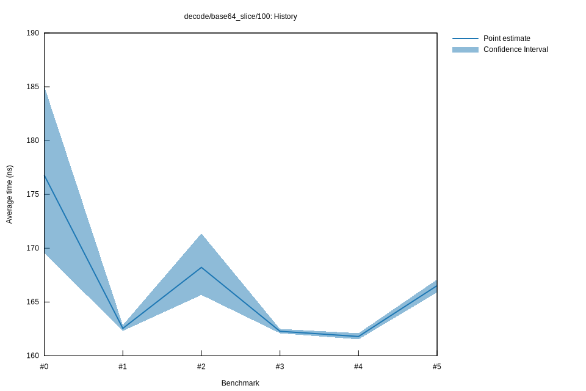

# 52022-10-16T20:19:54+03:00
|
Lower Bound |
Estimate |
Upper Bound |
| Value: |
165.90ns |
166.52ns |
167.09ns |
| Throughput: |
781.81MiB/s |
778.87MiB/s |
776.21MiB/s |
| Change in Value: |
+1.1117% |
+1.9915% |
+2.8670% |
| Change in Throughput: |
-1.0995% |
-1.9526% |
-2.7871% |
No change in performance detected.
# 42022-10-16T17:36:55+03:00
|
Lower Bound |
Estimate |
Upper Bound |
| Value: |
161.53ns |
161.79ns |
162.10ns |
| Throughput: |
802.95MiB/s |
801.64MiB/s |
800.11MiB/s |
| Change in Value: |
-0.3492% |
+0.2034% |
+0.9857% |
| Change in Throughput: |
+0.3504% |
-0.2029% |
-0.9761% |
Change within noise threshold.
# 32022-10-15T17:25:37+03:00
|
Lower Bound |
Estimate |
Upper Bound |
| Value: |
162.10ns |
162.28ns |
162.50ns |
| Throughput: |
800.14MiB/s |
799.24MiB/s |
798.17MiB/s |
| Change in Value: |
-4.0408% |
-2.6297% |
-1.4728% |
| Change in Throughput: |
+4.2110% |
+2.7007% |
+1.4948% |
No change in performance detected.
# 22022-10-15T16:59:09+03:00
|
Lower Bound |
Estimate |
Upper Bound |
| Value: |
165.65ns |
168.22ns |
171.38ns |
| Throughput: |
782.96MiB/s |
771.03MiB/s |
756.81MiB/s |
| Change in Value: |
+0.5736% |
+1.8816% |
+3.3422% |
| Change in Throughput: |
-0.5704% |
-1.8469% |
-3.2341% |
No change in performance detected.
# 12022-10-08T17:34:39+03:00
|
Lower Bound |
Estimate |
Upper Bound |
| Value: |
162.31ns |
162.55ns |
162.86ns |
| Throughput: |
799.08MiB/s |
797.92MiB/s |
796.40MiB/s |
| Change in Value: |
-6.0340% |
-3.7640% |
-1.7542% |
| Change in Throughput: |
+6.4215% |
+3.9112% |
+1.7855% |
No change in performance detected.
# 02022-10-08T17:15:03+03:00
|
Lower Bound |
Estimate |
Upper Bound |
| Value: |
169.55ns |
176.78ns |
185.05ns |
| Throughput: |
764.96MiB/s |
733.68MiB/s |
700.90MiB/s |